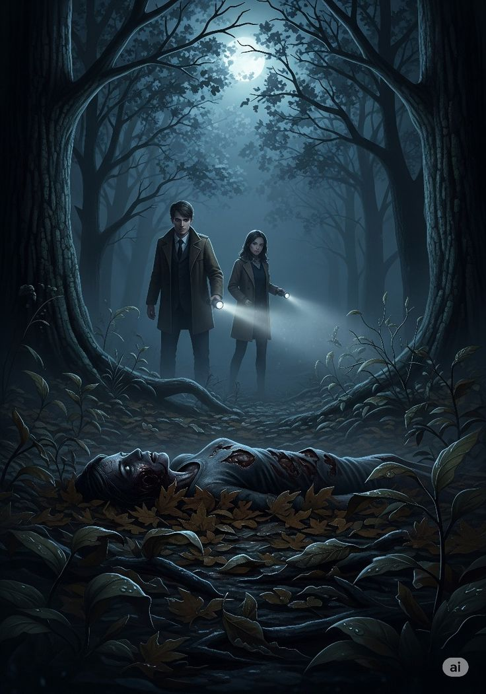
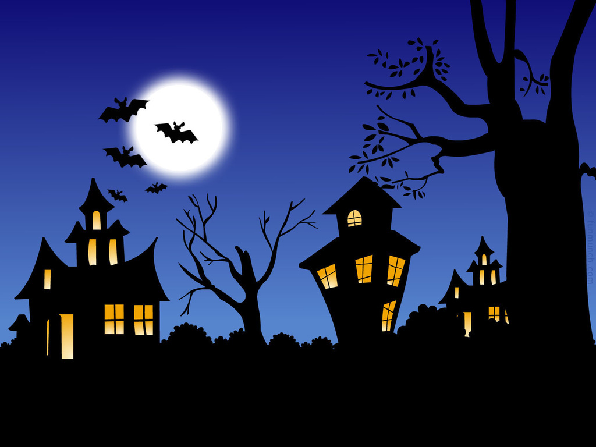
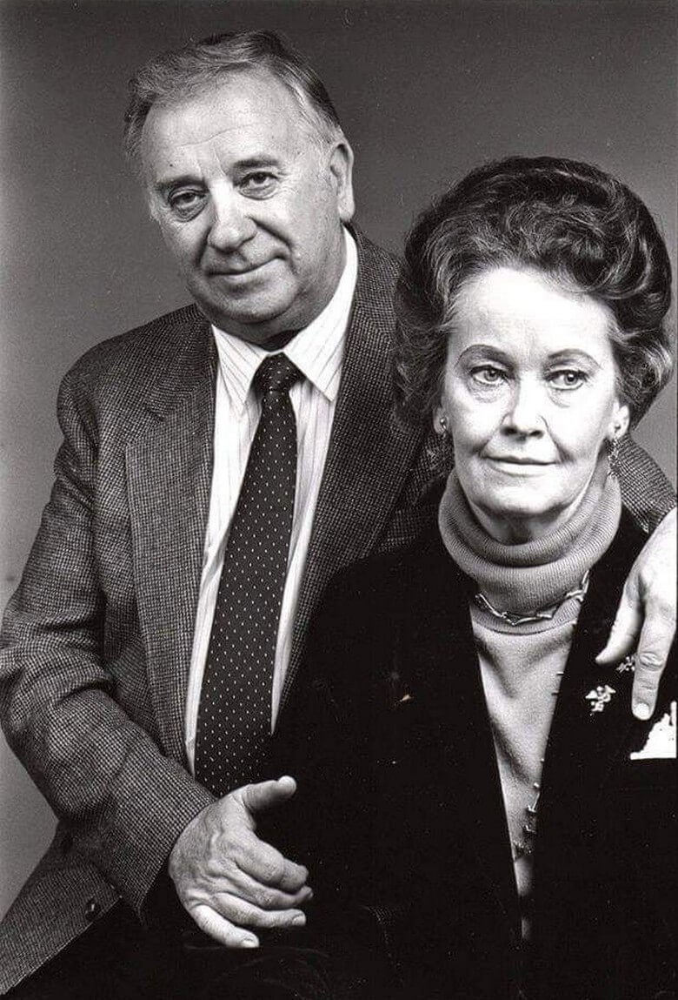

Meu primeiro post
Por Heloisa Manueli
Oiee pessoal, bem-vindos ao melhor conto de histórias sinitras e aterrorizantes! Aqui vou compartilhar várias histórias baseadas em fatos reais...
Vou compartilhar histórias de te arrepiar!

Por Heloisa Manueli
Oiee pessoal, bem-vindos ao melhor conto de histórias sinitras e aterrorizantes! Aqui vou compartilhar várias histórias baseadas em fatos reais...

Por: Heloisa Manueli
Em pesquisas gerais sobre mistérios ou eventos sem explicação imediata (incluindo avistamentos e fenômenos físicos), cerca de 35% das pessoas tendem a atribuir a causa diretamente ao sobrenatural."

Por: Heloisa Manueli
A série conta a hitória fictícia de 2 irmãos que lutam contra demônios, e ao decorrer da história ambos passam por um longo drama."

Por: Heloisa Manueli
Eles se tornaram mundialmente famosos por investigar casos de supostas assombrações e possessões, que deram origens á vários filmes.
Por: Heloisa Manueli
Até o momento, não existe comprovação científica ou evidência empírica verificável de que o sobrenatural seja real. Explicações Naturais: O que muitas pessoas interpretam como fantasmas ou presenças sobrenaturais costuma ser explicado por fatores psicológicos e neurológicos, como a paralisia do sono, alucinações hipnagógicas, pareidolia (encontrar padrões visuais em formas aleatórias) e microvibrações por infrassons.